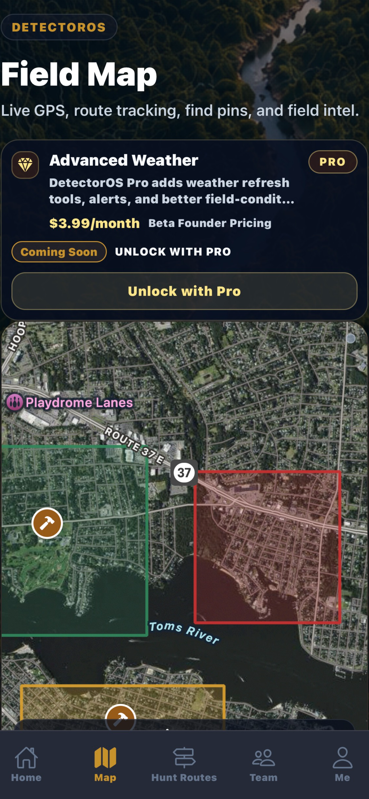
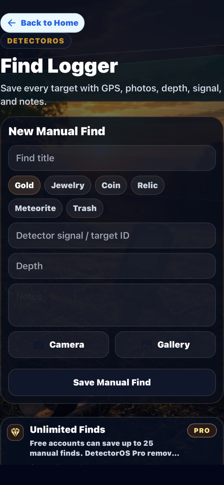
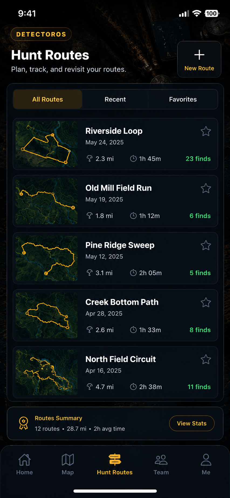
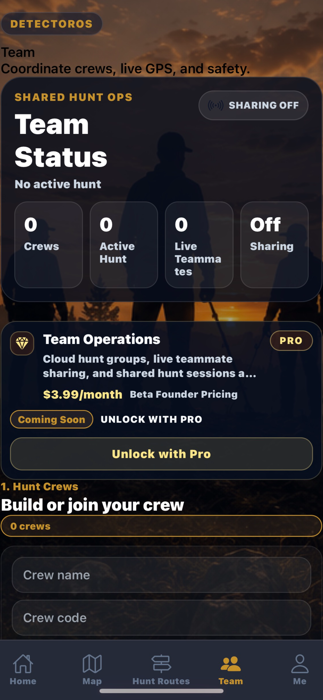
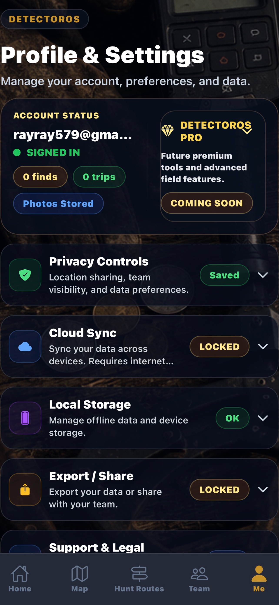

Field Intelligence for Modern Treasure Hunters
Plan hunts, track finds, navigate smarter, monitor weather, and organize every detecting adventure from one powerful platform.
Learn More Download on the App StoreUse maps, weather intelligence, and field planning tools to prepare before heading out.
Record your movement across parks, beaches, relic sites, fields, and other hunting locations.
Save photos, notes, GPS coordinates, and discovery details for every item you recover.
Analyze previous hunts, revisit productive locations, and build a complete detecting history.
Unlock unlimited finds, unlimited routes, advanced weather, cloud sync, exports, and premium field tools.
A cinematic field interface built for planning hunts, tracking routes, logging finds, managing teams, and unlocking Pro tools.

Track your location, plan hunt areas, and navigate smarter in the field.

Save finds with photos, notes, timestamps, and GPS locations.

Record, review, and organize your detecting routes.

Coordinate team hunts and keep your field activity organized.

Unlock advanced weather, unlimited logs, cloud sync, and premium tools.
"A powerful way to organize hunts, routes, and finds."
"Built for detectorists who want more than a basic notes app."
"The field map and find logging tools make every hunt easier to track."
Plan hunts, track finds, save routes, monitor weather, and organize every detecting adventure with DetectorOS.
View your hunting area, track your position, save important locations, and navigate the field with a detecting-focused map experience.
Record the path you take during a hunt so you can review where you searched, avoid covering the same ground twice, and save productive routes.
Save finds with photos, notes, timestamps, and GPS coordinates so every discovery has a clear record.
Monitor field conditions before and during hunts, including weather alerts that help you stay prepared outdoors.
Keep your important hunt data backed up and available across sessions so your finds, routes, and notes are not lost.
Coordinate hunts with other detectorists, organize shared activity, and keep team field operations easier to manage.
Prepare before heading out by organizing hunt areas, planning routes, checking conditions, and keeping your detecting strategy in one place.
$3.99/month
Log as many discoveries as you want with photos, notes, GPS locations, and field details.
Create and save unlimited hunt routes so every outing can be tracked, reviewed, and organized.
Unlock deeper field weather tools to help plan safer, smarter, and more productive detecting sessions.
Back up and sync your DetectorOS field data so your hunt history stays protected.
Export your field records, find logs, and route data for backup, sharing, or personal archiving.
Unlock the full DetectorOS tactical field system for serious detectorists who want more control, organization, and intelligence in the field.
DetectorOS is now available on the App Store for iPhone.
Download on the App StoreSupport: rayray579@gmail.com
Feedback: feedback@detectorosapp.com